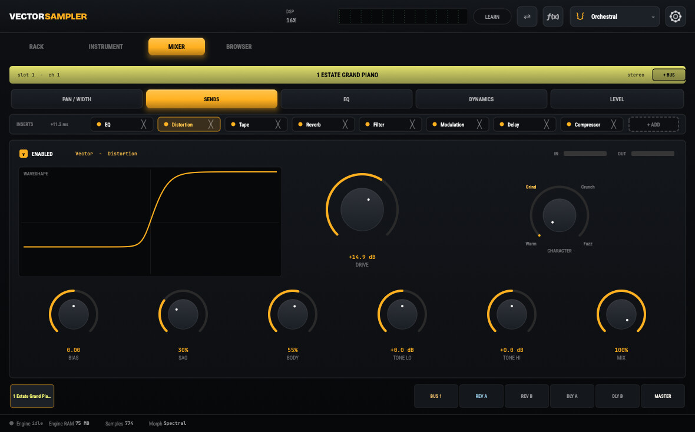

VectorDist
A distortion in its own right, with a character sweep running from fuzz through grind and crunch to warm.
The Idea
Most distortion plugins hand you a row of buttons: fuzz, grind, crunch, warm. You audition them one at a time and settle for whichever is closest. The interesting sounds are almost always somewhere between two of them, and a row of buttons is exactly the wrong shape for finding those.
VectorDist takes the approach the rest of the suite is built on and applies it to distortion: one engine, one continuous sweep, and every point along it is a usable voicing. Fuzz sits at one end and warm at the other, with grind and crunch on the way through — but the sweep is the instrument, not the four labels printed on it.
Where It Sits
VectorDist is a distortion, not an amplifier. VectorAmp solves a guitar amplifier and its speaker together, because in a real rig those two are arguing with each other. VectorDist has no cabinet and no opinion about what is plugged into it — it is a colour you put on any track in the session.
The two are built to be used together or apart.
The Engine
VectorDist today runs as an insert inside the instruments it was built for. LOUIS is the same engine wrapped as a standalone plugin.

Licensing
VectorDist will be commercial, proprietary software — licensed, not sold. Its source is not publicly available. Music you make with it will be yours, with no royalty owed on it.